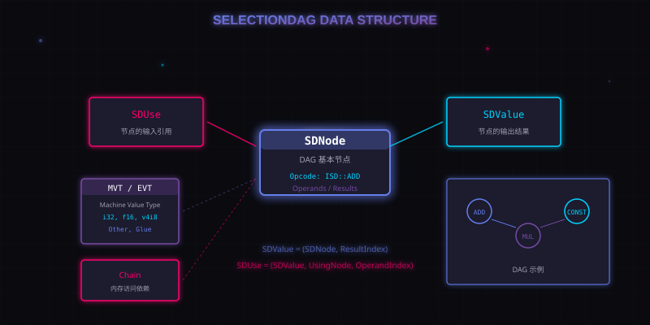

3. SelectionDAG 的数据结构
SelectionDAG 不是一整份程序对应一个 DAG，而是：
核心概念
每个基本块通常对应一个 SelectionDAG。
也就是说，一个函数里的多个 basic block，会被分别构造成多个 DAG。
3.1 MVT 和 EVT
理解 SelectionDAG，首先要理解它的类型系统。
MVT 是 Machine Value Type，表示机器值类型。它是一组 SelectionDAG 后端能讨论的基础类型，例如：
- 整数：
i1、i32、i128 - 浮点：
f16、bf16、f80 - 向量：
v2i32、v128bf16 - 特殊类型：
Other、Glue
但每个目标架构只支持其中一部分。比如某个目标可能支持 i32，但不支持 i128。
EVT 是 Extended Value Type，可以理解为 MVT 的扩展版。它包含：
- 所有 MVT；
- LLVM IR 中支持的整数、浮点、向量类型；
- 一些目标机器未必原生支持的奇怪类型，比如
i3、v99i99。
但 EVT 并不包含 LLVM IR 的所有类型，比如 struct 和 array 就不在 SelectionDAG 类型集合里。因此结构体相关操作在构建 DAG 时通常要被拆开。
3.2 SDNode：DAG 的节点
SDNode 是 SelectionDAG 的基本节点。每个节点通常包含：
Opcode：说明这个节点做什么，例如ISD::ADD、ISD::MUL、ISD::Constant；- 一个或多个结果；
- 零个或多个操作数；
- 其他附加信息，例如常量值、flags、内存访问信息等。
比如下面这段 IR：
%y = add i32 %a, 5 %z = mul i32 %y, 3 br label %join
在 DAG 中可能会出现：
ISD::Constant 5ISD::ADDISD::Constant 3ISD::MULISD::BR
3.3 SDValue：节点的输出
SDValue 表示某个 SDNode 的一个输出结果。
为什么不是一个节点只有一个输出？因为 SelectionDAG 里的节点可以有多个结果。比如一个节点可能同时产生：
- 一个普通值；
- 一个 chain；
- 一个 glue。
所以 SDValue 通常包含两件事：
- 它来自哪个
SDNode； - 它是这个节点的第几个结果。
3.4 SDUse：节点的输入
SDUse 表示某个节点使用了另一个节点产生的值，也就是 DAG 边上的"输入关系"。
它包含：
- 被使用的
SDValue； - 使用这个值的
SDNode； - 这是用户节点的第几个 operand。
可以简单理解为：
SDNode 产生 SDValue SDUse 把 SDValue 接到另一个 SDNode 的输入上

配图：SelectionDAG 数据结构关系图